Adobe Premiere Pro
Adobe Premiere Pro介绍
1.简介
Adobe Premiere Pro，简称Pr，是由Adobe公司开发的一款视频编辑软件。
常用的版本有CS4、CS5、CS6、CC 2014、CC 2015、CC 2017、CC 2018、CC 2019、CC2020、CC2021以及2022版本。
Adobe Premiere有较好的兼容性，且可以与Adobe公司推出的其他软件相互协作。这款软件广泛应用于广告制作和电视节目制作中。
2.pr和其他剪辑软件相比好在哪里？
Pr是专业级的剪辑软件，具有灵活性与协作性强的特点，提供了采集、剪辑、调色、美化音频、字幕添加、输出、DVD刻录的一整套流程。
并可以和其他Adobe软件(如ps、au、ae)高效集成，足以完成在编辑、制作、工作流上遇到的所有挑战，但学习的难度也比较大。
Adobe Premiere Pro简明教程
1.认识pr界面
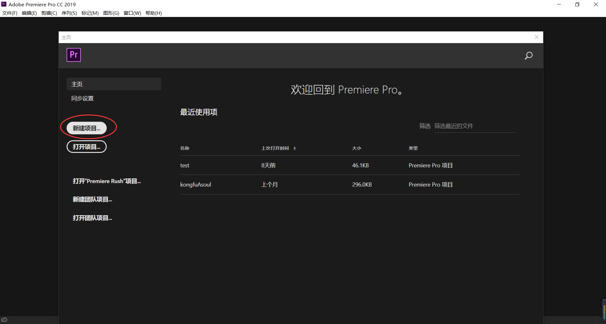
如图，打开pr后，首先是项目界面，一个项目就是一个视频工程。如果第一次使用的话，点击“新建项目”，如果已经有了项目，想要继续制作视频的话，直接点击右边的项目即可。
如果右边没有显示自己的项目，也可以在本地文件中打开自己曾经的项目。
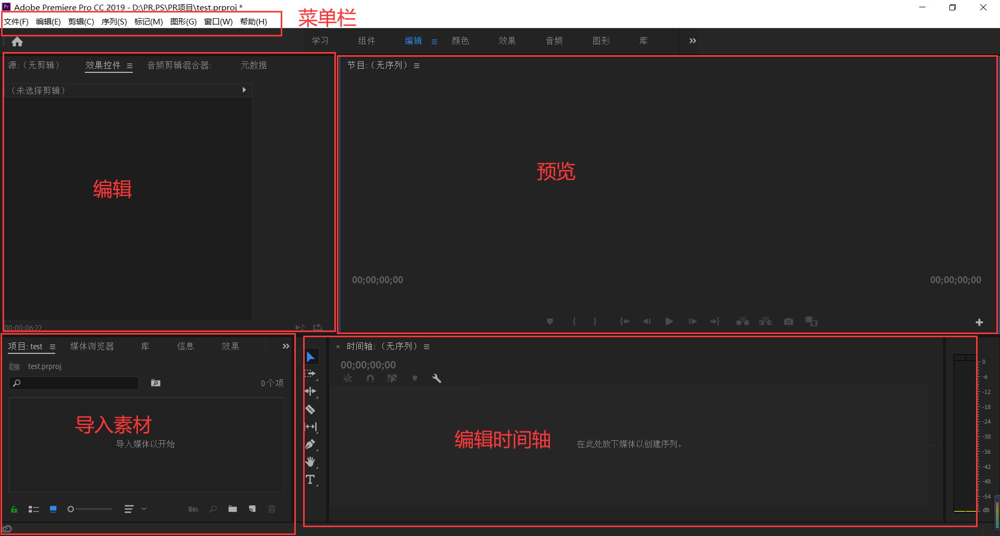
打开项目后，如图，整个pr大致分为了这几个板块，它们分别有不同的作用，它们的功能下面会详细讲解。
2.导入素材
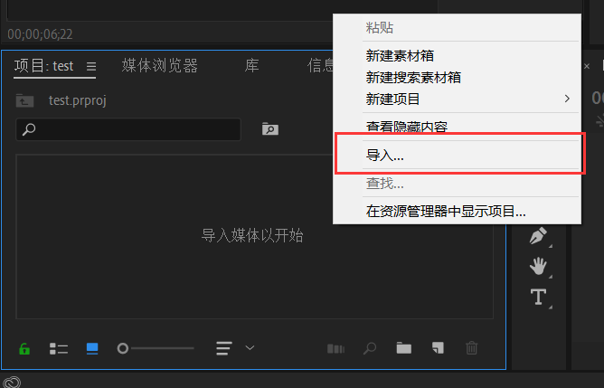
在素材栏中单击右键，选择导入素材，可以从本地导入图片、视频或声音素材，也可以导入ps专用的psd格式等。
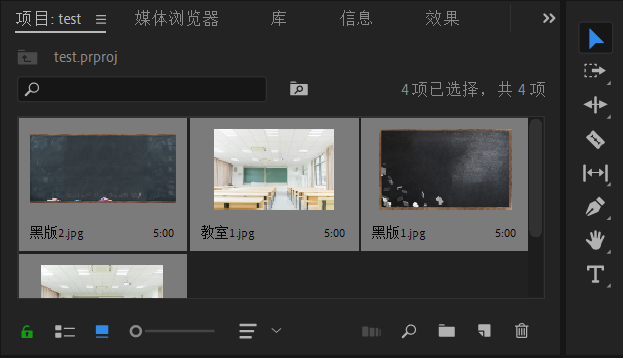
如图，导入完成，为下一步剪辑做准备。
3.简单剪辑
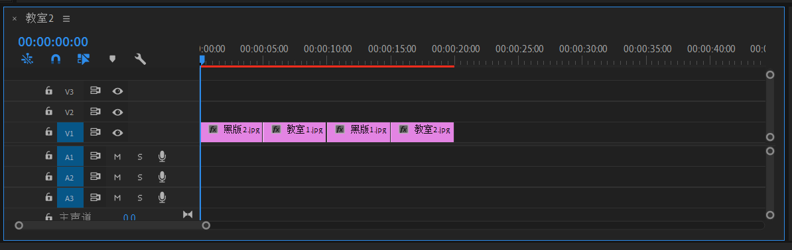
用鼠标把素材拖到时间轴上，可以看到时间轴上出现了素材，其中V1，V2，V3……是图像轨道，A1，A2，A3……是声音轨道。
如果素材是图片，则只会占用图像轨道，并且每个图片默认时长是5s，如果素材是声音，则只会占用音频轨道，如果素材是视频，
则两个轨道都会占用。在图像轨道中，位于上面的轨道的图像会覆盖掉下面轨道的图像。
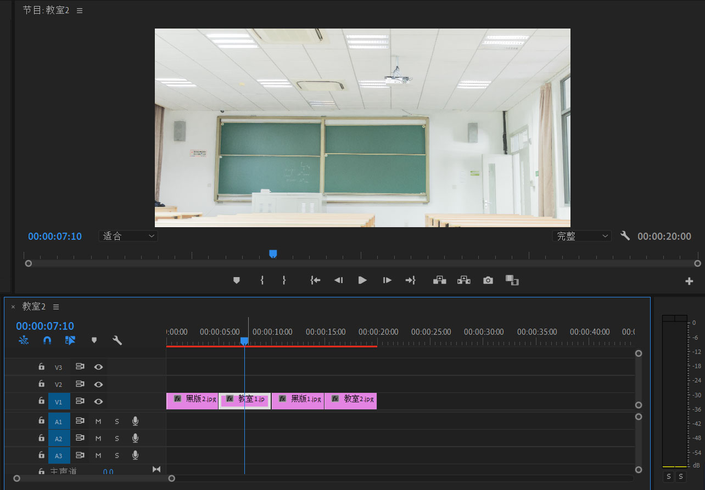
如图，可以拖动时间轴的指针到不同的画面查看效果，在预览画面中会显示。当然也可以拖动预览画面中的指针，达到同样的效果。
点击某个素材，可以选中该素材，拖动该素材的最左端或最右端，可以进行素材的裁剪。
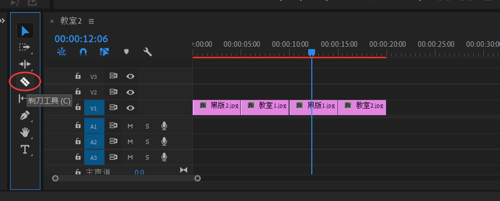
如图，可以使用剪刀工具（快捷键C），点击后可以在素材上裁剪。
4.处理视频/声音
导入一段视频，把它拖到时间轴上，画面和音频会默认绑定，点击右键，会出现许多选项，如下图所示。
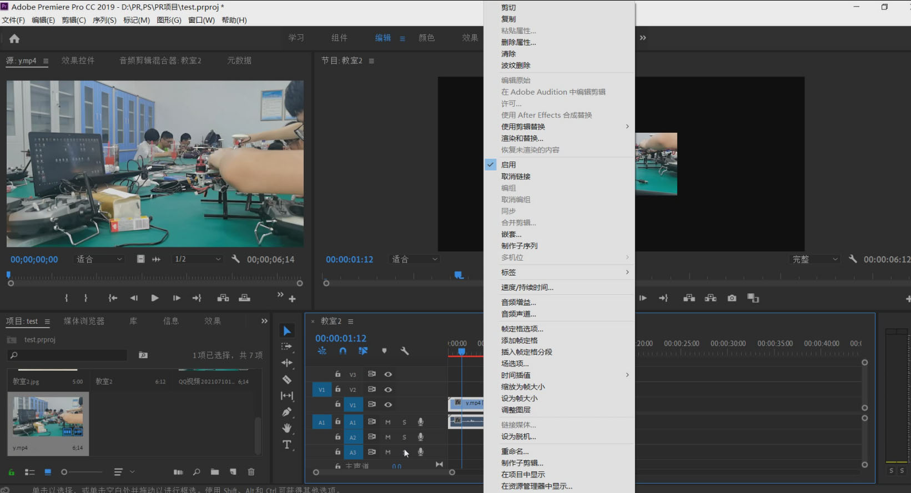
其中比较常用的几个按钮：
取消链接：指把画面和音频的绑定给取消，拖动画面时不会再影响音频，二者可以单独拖动
速度/持续时间：点击后可以更改视频或音频播放的速度，或指定一段素材的持续时间进行变速，也可以选择倒放。
音频增益：可以调大或者缩小音频的音量。
缩放为帧大小：当画面在预览栏里面大小不对时可以点击此选项迅速自动调整画面的大小
5.关键帧和动画
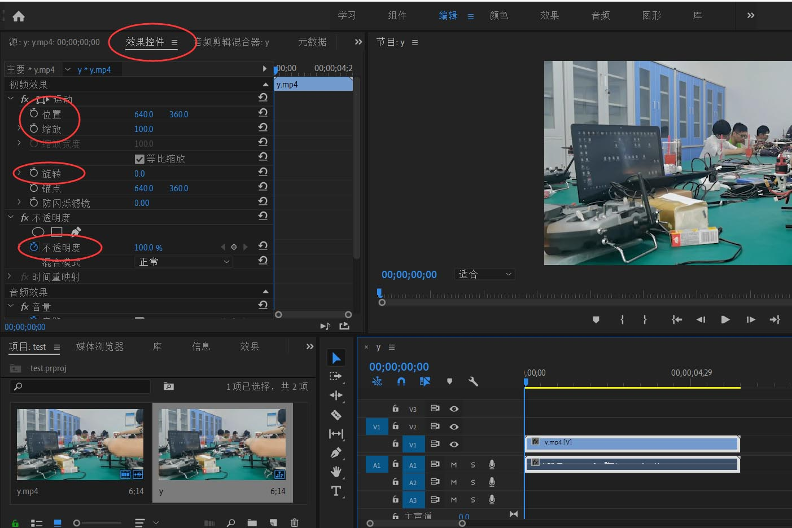
选中一段素材，如图，在左上角点击“效果控件”按钮，可以调整画面的位置、缩放大小以及不透明度等。
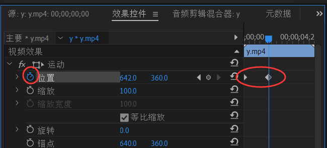
如图，点击像钟表一样的图标，可以为素材的某个属性添加关键帧，之后关键帧处于开启状态，当在时间轴的不同位置再次调整这个熟悉时，
该属性的值会随着时间轴的移动以线性函数方式改变。从而实现动画的效果。
6.绿幕抠像
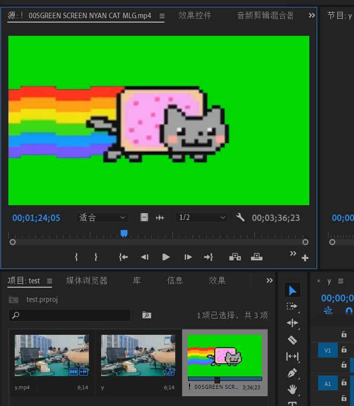
首先需要导入一个绿幕素材，如图所示。并将绿幕素材拖动到原先素材的轨道上方。
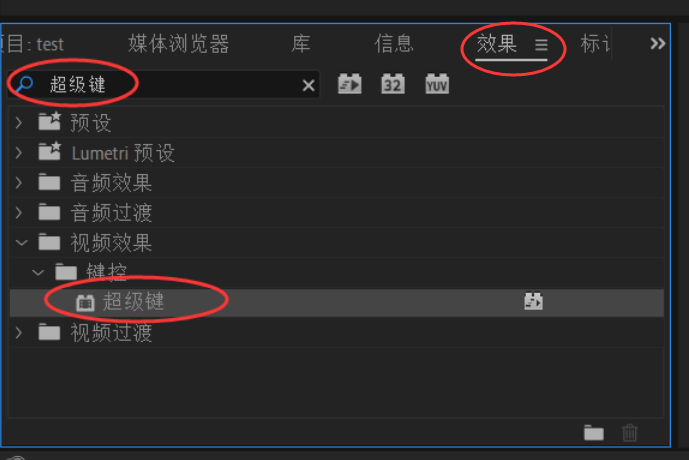
在左下角的素材库中点击“效果”，输入“超级键”，将超级键拖入到绿幕素材上。
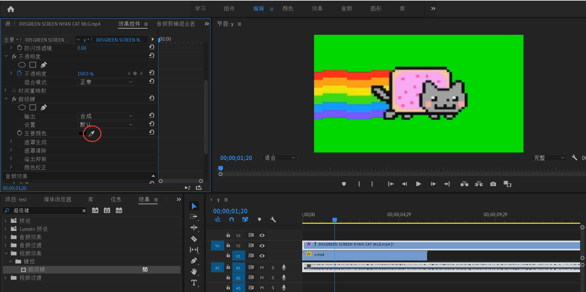
点击左上角的“效果控件”，将滚轮向下拖，点击“主要颜色”右边的吸管，在预览画面的绿色部分点击一下即可吸取所有绿色部分，
成功抠出绿幕画面的内容，可以将视频自然播放预览效果，绿幕抠像效果完成。
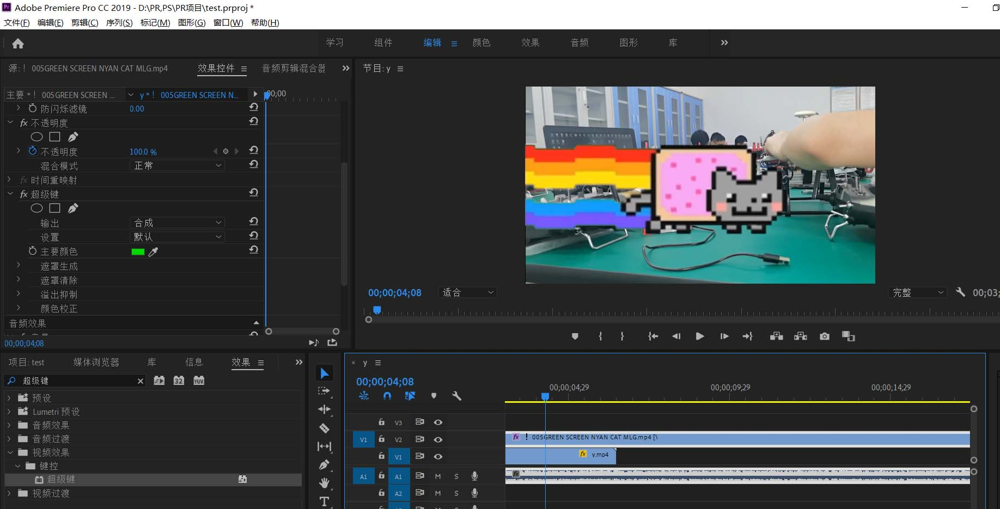
7.导入预设，加入特效
pr还有许多更强大的功能，比如预设特效，字幕，视频转场，打点标记，序列和嵌套，以及配合插件使用等，由于篇幅原因，更多的内容需要自己去探索。
这里简单提一下预设和特效，点击左下角的效果，选择预设，会看到许多效果，可以将它们一一拖到素材上面预览效果，也可以从外部直接导入预设。
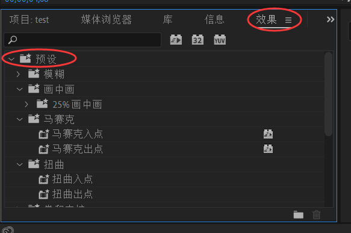
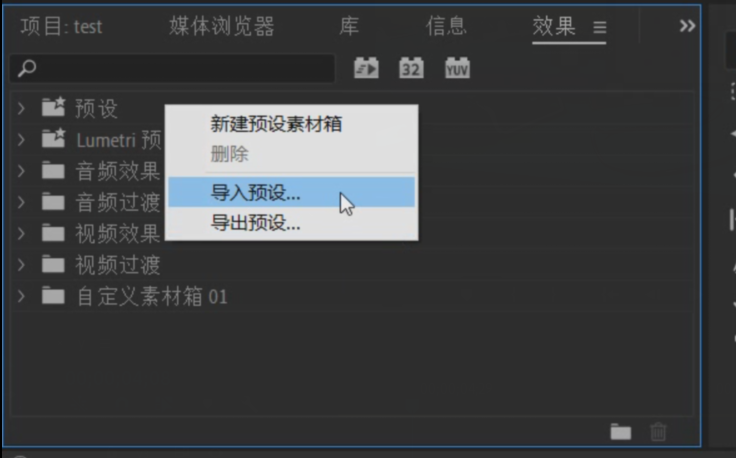
8.导出视频，制作完成
视频制作结束后，我们需要拿到自己辛苦做好的作品。
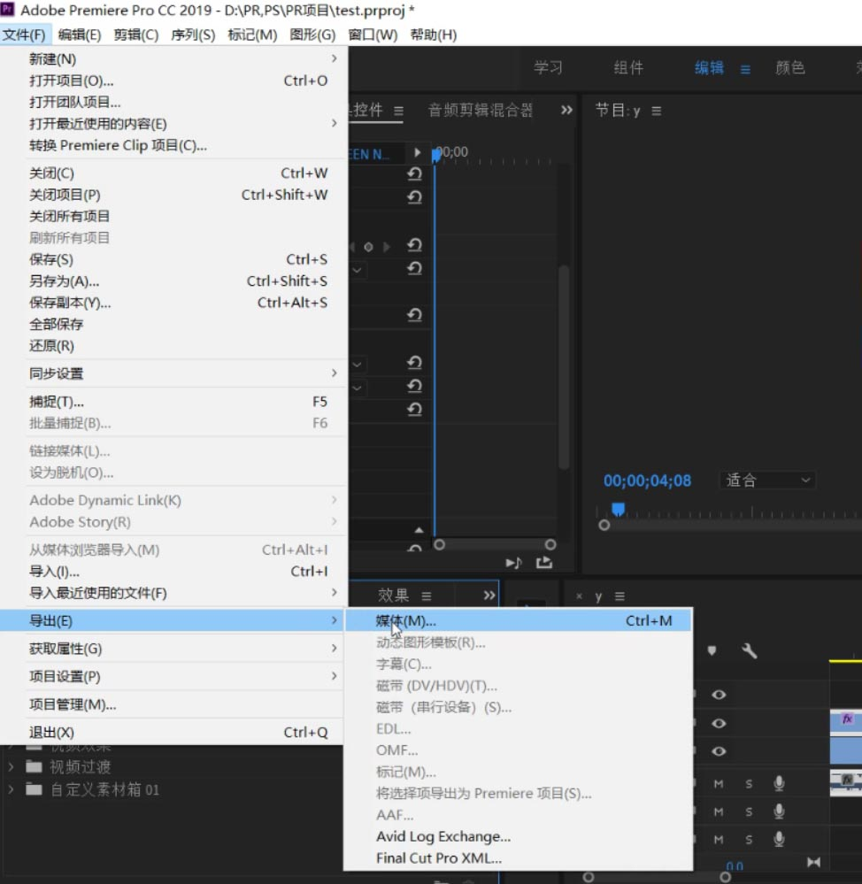
点击左上角 文件-导出-媒体，即可进入视频导出界面，可以进行一些设置，默认输出格式为H.264，导出后为mp4格式，输出名称即为视频的名称，点击名称可以选择导出的路径。
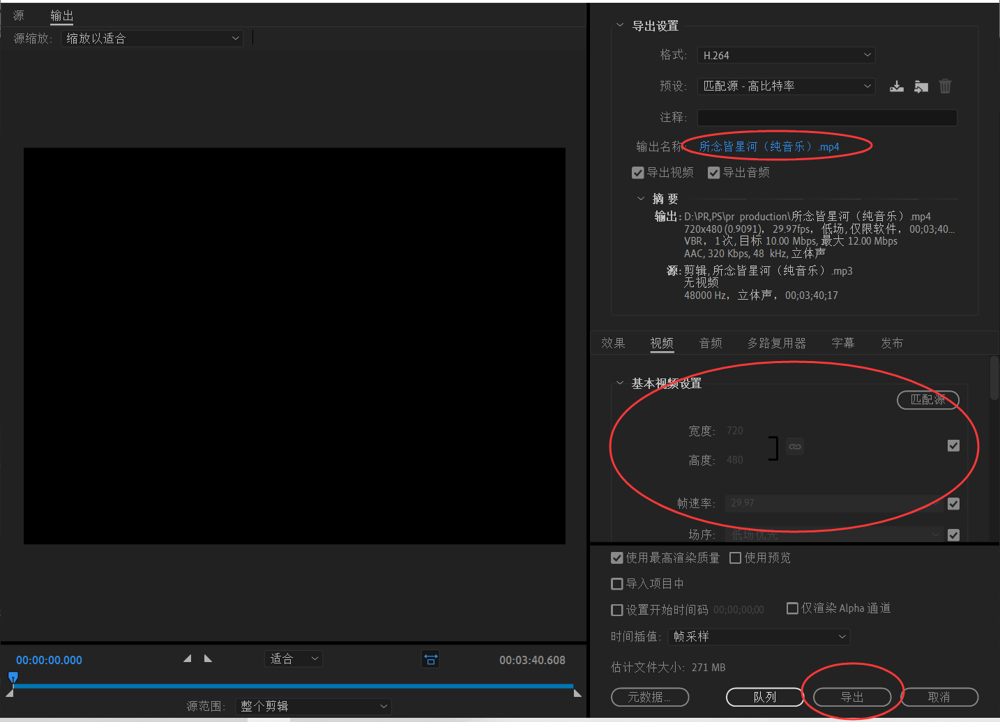
下面可以继续进行一些参数的设置，全部设置好后，点击导出按钮，在经过一定时间的等待后，视频即可导出到相应的位置，整个流程结束。
Adobe Premiere Pro展示
下面为一些用pr做出的效果：